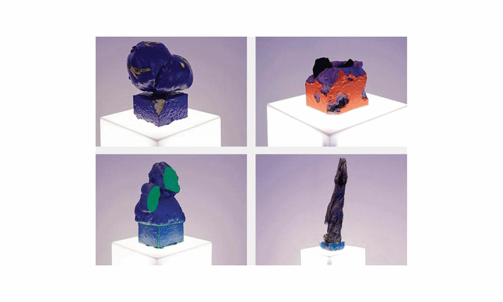
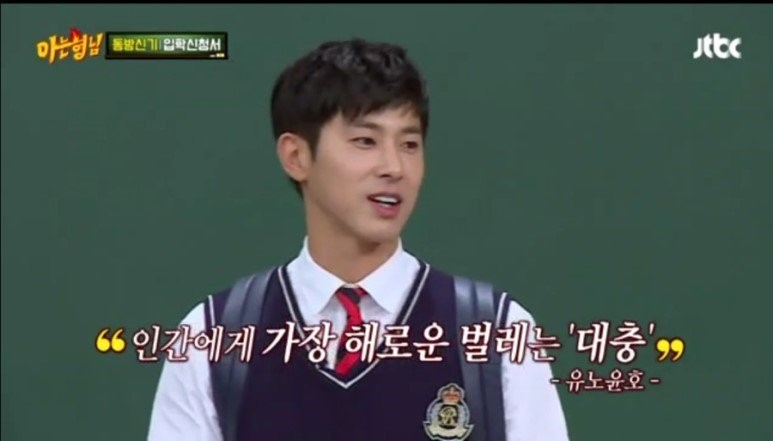

background mathmatical modeling physical model how-to

João GG, Giacometti, Michelangelo
작업 초반에는 외로움이 나에게 어떤 느낌으로 다가오는지에 집중했다. 그러다가 '주위에 울타리를 치고 스스로를 가두는 형상'이 떠올랐다. 그런데 이건 너무 우울하다. 끊임없이 자신을 더 가둔다니.

JTBC '아는 형님'
나는 극복 메뉴얼 같은 게 프로그래밍되어 있는, 그런 사람인가 보다. 그래, 그런 우울한 state에 계속 머물러 있을 수 없지. 그래서 생각했다. 그렇다면 이 우울함은 객관적으로 봤을 때 어떤 모양일까? 어떤 형태를 가질까? 어떤 모델로 설명할 수 있을까? 라는 질문이 생겼다.